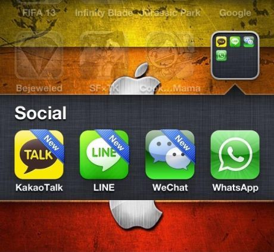

- Nusaresearch Laporan lainnya Pemberitahuan Adu Keren WhatsApp, Line, Kakao Talk & WeChat
Adu Keren WhatsApp, Line, Kakao Talk & WeChat
- Nusaresearch
- 12-04-2013
- 2723
-
- Nilai: 0

Indonesia sedang diserbu layanan instant messaging lintas platform mobile. Berbagai aplikasi buatan Amerika hingga China pun mencoba memikat konsumen Indonesia.
Di Tanah Air, setidaknya sampai saat ini ada empat aplikasi yang bersaing ketat. Mulai dari Whatsapp, Line, Kakao Talk dan WeChat.
Memang masih ada beberapa lagi layanan sejenis di toko online. Namun, setidaknya empat aplikasi di atas yang rajin memperkenalkan diri melalui iklan dan media massa.
Semuanya pasti mengklaim menawarkan layanan yang berbeda dan lebih unggul satu sama lain. Sehingga tak sekadar saling bertukar pesan semata.
Benarkah demikian? Hanya konsumen tentunya yang tahu dan merasakan.
Nah, detikINET mencoba mengulik lebih dalam mengenai keunggulan dan fitur yang ada di empat aplikasiinstant messaging tersebut. Supaya Anda bisa pilah-pilih layanan mana yang cocok. Berikut hasilnya.
Di Tanah Air, setidaknya sampai saat ini ada empat aplikasi yang bersaing ketat. Mulai dari Whatsapp, Line, Kakao Talk dan WeChat.
Memang masih ada beberapa lagi layanan sejenis di toko online. Namun, setidaknya empat aplikasi di atas yang rajin memperkenalkan diri melalui iklan dan media massa.
Semuanya pasti mengklaim menawarkan layanan yang berbeda dan lebih unggul satu sama lain. Sehingga tak sekadar saling bertukar pesan semata.
Benarkah demikian? Hanya konsumen tentunya yang tahu dan merasakan.
Nah, detikINET mencoba mengulik lebih dalam mengenai keunggulan dan fitur yang ada di empat aplikasiinstant messaging tersebut. Supaya Anda bisa pilah-pilih layanan mana yang cocok. Berikut hasilnya.
Saat BlackBerry Messenger (BBM) memiliki keterbatasan karena hadir di platform BlackBerry saja, WhatsApp mencoba mencuri perhatian pengguna smartphone.
1.WhatsApp
WhatsApp dibesut oleh mantan punggawa Yahoo Brian Acton dan Jan Koum yang berbasis di California, Amerika Serikat.
Aplikasi ini secara umum berbayar, dimana pada awalnya pelanggan disuruh membeli lisensi dalam jangka waktu tertentu.
Secara keseluruhan, antara BBM dengan WhatsApp tidak jauh berbeda. Hanya bisa saling bertukar pesan, gambar, suara dan membuat grup chatting.
Karena fitur standarnya tapi bisa lintas smartphone, banyak pengguna yang beralih dari BBM ke WhatsApp.
Nah, bila BBM berbasis pin BlackBerry, maka WhatsApp ini berdasarkan nomor telepon yang didaftarkan.
Karena berbasis nomor ponsel inilah, tak sedikit yang mengeluhkan pengguna nomor tak dikenal yang tiba-tiba bisa mengirimkan pesan.
Group chat dibatasi hanya 30 nomor. Tapi, selain admin yang biasanya hanya pembuat grup, tidak ada yang bisa menambahkan nomor atau teman lainnya.
Kelebihan: WhatsApp terletak pada antarmuka dan fungsi yang standar. Sehingga siapapun bisa dengan mudah menggunakannya, termasuk kalangan pebisnis yang tak ingin layanan macam-macam.
Kekurangan: Fitur yang hanya standar di tengah persaingan memang relatif disukai atau tidak.
Tapi yang agak mengganjal di pengguna WhatsApp terkadang harus membayar untuk jangka waktu tertentu.
2. Line
Menurut cerita, awal dibuatnya aplikasi instant messaging Line untuk 'menolong' pria yang tak bisa mengungkapkan kata-kata kepada wanita.
Sehingga jadilah Line terkenal tak hanya sebagai penyampai pesan kata, namun juga sticker -- semacam animasi yang lucu-lucu. Jadi, kebanyakan pengguna Line lebih sering bertukar sticker ketimbang kata.
Sticker yang lucu yang membuat Line booming dimanfaatkan sang pengembangnya, NHN Japan, untuk berjualan sticker.
Line tak sekadar menawarkan instant messaging, karena pada kenyataannya pengguna bisa menelpon sesama anggota Line dengan berbasis VoiP (Voice Internet Protocol).
Ini yang sedikit membedakan Line dengan layanan sejenis, pengguna bisa melakukan switch ke PC.
Fitur lain yang mungkin dianggap penting adalah, pengguna Line bisa mengetahui apakah pesannya sudah dibaca atau belum.
Timeline adalah fitur lain yang ditawarkan oleh pengguna Line. Pengguna bisa menuliskan segala aktivitasnya layaknya di Facebook.
Karena lintas platform, bermain game yang sudah dibuat pun bisa dilakukan oleh pengguna Line secara bersamaan.
Tentu saja pengguna bisa saling membalas dengan sticker yang unyu-unyu.
Kelebihan: Tak hanya sekedar bertukar pesan tertulis. Pengguna pun bisa berbagi sticker dengan karakter yang tak biasa. Termasuk saat beralih ke PC.
Kekurangan: Walaupun pada dasarnya Line tidak berbasis nomor telepon. Pengguna bisa dengan mudah meng-add akun Line, tanpa perlu di-approve.
Bagi sebagian orang, tahu-tahu nongol akun yang tidak dikenal atau tidak diinginkan mungkin menganggu. Walau setelah itu bisa diblok.
3. Kakao Talk
Datang dari Korea Selatan, Kakao Talk kembali mencoba peruntungannya di pasar Indonesia. Selain fitur standar, seperti berbagai pesan dan gambar, apalagi yang bisa diberikan oleh KakaoTalk?
Tentu saja kemampuannya untuk menelpon gratis berbasis VoIP. Tapi kelebihan free call di KakaoTalk, pengguna bisa menelpon secara bersamaan tanpa batas.
Memang semakin banyak yang diajak ngobrol bareng akan berpengaruh dari kualitas suaranya. Tergantung kualitas internet yang digunakan.
KakaoTalk sepertinya memang tidak menawarkan fitur sebanyak Line, seperti game atau jejaring sosial. Tapi kelebihannya ada pada Item Shop yang menjual sticker bercitarasa lokal.
Sebut saja item dari blogger kenamaan, Benazio atau sticker lucu dari Pocong. Menariknya lagi, pengguna bisa menggunakan emoticon tersebut selama 90 hari sebelum membelinya.
Kelebihan: Menelpon gratis atau group chat sesama akun dengan jumlah sangat banyak menjadi kelebihan di KakaoTalk. Item seperti sticker atau emticon pun bisa dijajal sebelum dibeli.
Kekurangan: Bagi sebagian orang emoticon di Kakao Talk kurang ekspresif. Apalagi fitur yang ditawarkan juga nanggung, tidak sedikit tapi tidak banyak juga.
4. WeChat
Datang sebagai penantang terakhir, WeChat langsung mencuri perhatian pengguna smartphone. Tentu saja dengan fitur yang diklaim lebih lengkap.
Fitur seperti berbagi pesan, VoiP dan emoticon sudah pasti ada di WeChat. Namun soal emoticon, detikINET merasa kurang banyak dan terlalu mainstream.
Berbagi aktivitas pun bisa dilakukan seperti layaknya Line. Agak beda adalah fitur Look Around, yang memungkinkan pengguna mencari sesama pengguna WeChat di lokasi tempatnya berada.
Ingin pindah komputer, pengguna WeChat sudah bisa melakukannya. Karena layanan instant messaging asal China ini telah menyajikannya.
Tapi berbeda dengan Line, pengguna tak perlu repot-repot mendownload versi desktop. Karena cukup dengan scan QR code pengguna langsung switch ke PC.
Kelebihan: Fitur Look Around dan switch ke PC yang mudah, menurut detikINET, paling menarik dari WeChat ini. Terlepas dari fitur standar lainnya.
Hasil Akhir
Hampir semua fitur standar ada di empat aplikasi instant messaging ini. Semuanya berjalan lancar, walau antar platform belum tentu sama bagusnya. Tergantung jaringan internetnya.
Suka membuat grup pun bisa dilakukan di empat aplikasi ini. Memang antar aplikasi jumlah anggotanya berbeda satu sama lain.
Tapi minus ada di WhatsApp, adalah pengguna tak bisa melakukan panggilan berbasis internet.
Soal jernih atau tidaknya dalam melakukan panggilan suara, tentu saja tergantung dari jaringan yang didapatkan.
Emoticon atau Sticker
Kecuali WhatsApp, pengguna bisa soal saling bertukar sticker dan emoticon. Soal selera, memang tak sama antara satu aplikasi dengan lainnya.
Walau boleh dibilang, menurut detikINET, katalog emoticon dari WeChat kurang menarik.
Kendati bukan yang paling bagus, memiliki dahulu sebelum membayar emoticon, menjadi strategi yang bagus buat Kakao Talk.
Switch ke PC
Melanjutkan chatting ke PC tentu menarik. Tapi hanya WeChat dan Line yang mempunyai fitur ini.
SUMBER: inet.detik.com
Laporan lainnya

-

Pemenang Quiz Tebak Acak Kata Instagram
 Nusaresearch
Nusaresearch 25-02-2021
25-02-2021 -

Bonus Poin Untuk Anggota Yang Aktif
Nusaresearch28-12-2020 -

Pengumuman Pemenang Bonus Poin "Kuis Bercocok Tanam"
Nusaresearch07-10-2020 -

Lempar Koin Keberuntungan di Nusaresearch
Nusaresearch13-08-2020
Related Report
-
Pemenang Quiz Tebak Acak Kata Instagram
Nusaresearch25-02-2021 -
Bonus Poin Untuk Anggota Yang Aktif
Nusaresearch28-12-2020 -
Pengumuman Pemenang Bonus Poin "Kuis Bercocok Tanam"
Nusaresearch07-10-2020 -
Lempar Koin Keberuntungan di Nusaresearch
Nusaresearch13-08-2020
Permitaaan laporan untuk kita


If you feel interesting, Please share it